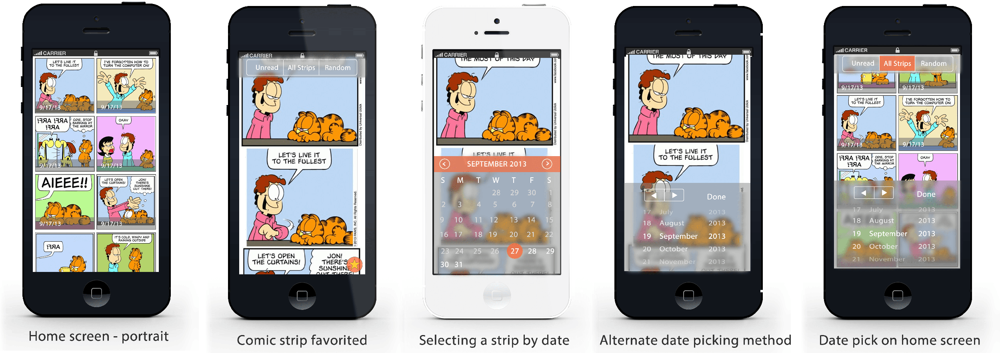
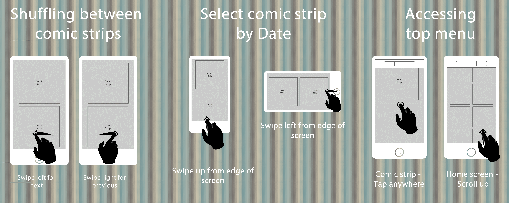

My Garfield
I got the idea for this app when I found the official Garfield reader app lacking on many fronts such as
i. I think it would be quite interesting and possibly natural to present the comic strip in portrait mode so that it scrolls vertically. This is something I am gathering data about
ii. There is no way to browse strips - the only way to navigate is to one at a time or enter a date.
iii. The interface can use updating with features like bookmarking/favoriting.
Using the above, I have laid out the different views for the new app alongwith the interactions and change of states. The key focus is smoother navigation and interactions. The app is currently in beta testing - I plan to incorporate the feedback before a full release.
Technologies Used
Design - Adobe Fireworks CS5
Prototyping - HTML5, CSS3, Javscript, Phonegap
- 
Portrait Mockups

Landscape Mockups
- 
Interaction Guide